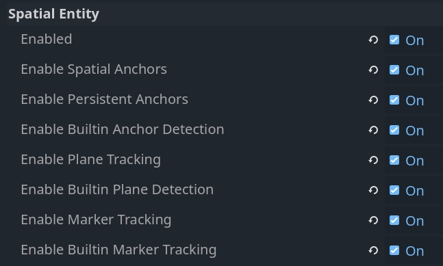
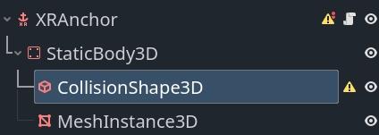

Spatial entities trong OpenXR
Với bất kỳ ứng dụng thực tế tăng cường nào, bạn cần truy cập thông tin thế giới thực và có thể theo dõi các vị trí trong thế giới thực. API spatial entities của OpenXR được giới thiệu chính vì mục đích này.
API này có thiết kế rất mô-đun. Phần lõi của API định nghĩa cách các thực thể thế giới thực được cấu trúc, cách chúng được tìm thấy, và cách thông tin về chúng được lưu trữ và truy cập.
Nhiều extension được bổ sung bên trên, triển khai các hệ thống cụ thể như theo dõi marker, theo dõi mặt phẳng và anchor. Chúng được gọi là các spatial capability.
Mỗi thực thể mà hệ thống có thể xử lý được chia nhỏ thành các component, giúp dễ dàng mở rộng hệ thống và thêm capability mới.
Các nhà cung cấp có thể triển khai và cung cấp thêm capability và kiểu component dùng được với API lõi. Với Godot, chúng có thể được triển khai trong các extension. Tuy nhiên, những triển khai này nằm ngoài phạm vi của tài liệu này.
Cuối cùng, cần lưu ý rằng hệ thống spatial entity sử dụng các hàm bất đồng bộ. Nghĩa là bạn có thể bắt đầu một tiến trình, rồi sau đó mới được thông báo khi nó hoàn tất.
Thiết lập
Để sử dụng spatial entities, bạn cần bật các cài đặt dự án liên quan. Bạn có thể tìm chúng trong mục OpenXR:

Cài đặt |
Mô tả |
|---|---|
Enabled |
Bật phần lõi của hệ thống spatial entities. Tùy chọn này phải được bật thì mọi hệ thống spatial entities mới hoạt động. |
Bật spatial anchor |
Bật capability spatial anchor, cho phép tạo và theo dõi spatial anchor. |
Bật persistent anchor |
Bật khả năng làm cho spatial anchor trở nên persistent (lưu bền). Nghĩa là vị trí của chúng được lưu lại và có thể lấy lại trong các phiên sau. |
Bật phát hiện anchor tích hợp sẵn |
Bật logic phát hiện anchor tích hợp sẵn của chúng tôi, logic này sẽ tự động lấy các persistent anchor và điều chỉnh vị trí anchor khi dữ liệu theo dõi được cập nhật. |
Bật theo dõi mặt phẳng |
Bật capability theo dõi mặt phẳng, cho phép phát hiện các bề mặt như sàn, tường, trần và bàn. |
Bật phát hiện mặt phẳng tích hợp sẵn |
Bật logic phát hiện mặt phẳng tích hợp sẵn của chúng tôi, logic này sẽ tự động phản hồi khi có dữ liệu mặt phẳng mới. |
Bật theo dõi marker |
Bật capability theo dõi marker, cho phép phát hiện các marker như mã QR, marker Aruco và April tag. |
Bật theo dõi marker tích hợp sẵn |
Bật logic phát hiện marker tích hợp sẵn của chúng tôi, logic này sẽ tự động phản hồi khi tìm thấy marker mới hoặc khi marker bị di chuyển trong không gian của người chơi. |
Ghi chú
Lưu ý rằng nhiều thiết bị XR còn yêu cầu đặt các cờ quyền (permission). Bạn cần bật chúng trong cài đặt export preset.
Bật các capability khác nhau sẽ kích hoạt các API OpenXR liên quan, nhưng cần thêm logic để tương tác với dữ liệu này. Với mỗi hệ thống lõi, chúng tôi có logic tích hợp sẵn có thể bật để làm việc này cho bạn.
Trước tiên, chúng ta sẽ bàn về hệ thống spatial entities với giả định logic tích hợp sẵn đã được bật. Sau đó chúng ta sẽ xem xét các API bên dưới và cách bạn có thể tự triển khai, tuy nhiên cần lưu ý rằng việc này thường là quá mức cần thiết và các API bên dưới chủ yếu được cung cấp để các plugin GDExtension có thể triển khai thêm capability.
Tạo spatial manager
Khi spatial entity được phát hiện hoặc được tạo, một đối tượng OpenXRSpatialEntityTracker sẽ được tạo instance và đăng ký với XRServer.
Mỗi kiểu spatial entity sẽ triển khai lớp con riêng, nhờ đó chúng ta có thể phản hồi khác nhau với từng kiểu thực thể.
Nói chung, chúng ta sẽ tạo instance các subscene khác nhau cho từng kiểu thực thể. Vì các đối tượng tracker có thể dùng với node XRAnchor3D, các subscene này nên có một node như vậy làm node gốc.
Mọi entity tracker đều cung cấp vị trí của chúng thông qua pose default.
Chúng ta có thể tự động hóa việc tạo các subscene này và thêm chúng vào scene tree bằng cách tạo một đối tượng manager. Vì mọi vị trí đều cục bộ so với node XROrigin3D, chúng ta nên tạo manager là node con của node origin.
Dưới đây là phần cơ bản của script triển khai logic manager:
class_name SpatialEntitiesManager
extends Node3D
## Signals a new spatial entity node was added.
signal added_spatial_entity(node: XRNode3D)
## Signals a spatial entity node is about to be removed.
signal removed_spatial_entity(node: XRNode3D)
## Scene to instantiate for spatial anchor entities.
@export var spatial_anchor_scene: PackedScene
## Scene to instantiate for plane tracking spatial entities.
@export var plane_tracker_scene: PackedScene
## Scene to instantiate for marker tracking spatial entities.
@export var marker_tracker_scene: PackedScene
# Trackers we manage nodes for.
var _managed_nodes: Dictionary[XRTracker, XRAnchor3D]
# Enter tree is called whenever our node is added to our scene.
func _enter_tree():
# Connect to signals that inform us about tracker changes.
XRServer.tracker_added.connect(_on_tracker_added)
XRServer.tracker_updated.connect(_on_tracker_updated)
XRServer.tracker_removed.connect(_on_tracker_removed)
# Set up existing trackers.
var trackers : Dictionary = XRServer.get_trackers(XRServer.TRACKER_ANCHOR)
for tracker_name in trackers:
var tracker: XRTracker = trackers[tracker_name]
if tracker and tracker is OpenXRSpatialEntityTracker:
_add_tracker(tracker)
# Exit tree is called whenever our node is removed from our scene.
func _exit_tree():
# Clean up our signals.
XRServer.tracker_added.disconnect(_on_tracker_added)
XRServer.tracker_updated.disconnect(_on_tracker_updated)
XRServer.tracker_removed.disconnect(_on_tracker_removed)
# Clean up trackers.
for tracker in _managed_nodes:
removed_spatial_entity.emit(_managed_nodes[tracker])
remove_child(_managed_nodes[tracker])
_managed_nodes[tracker].queue_free()
_managed_nodes.clear()
# See if this tracker should be managed by us and add it.
func _add_tracker(tracker: OpenXRSpatialEntityTracker):
var new_node: XRAnchor3D
if _managed_nodes.has(tracker):
# Already being managed by us!
return
if tracker is OpenXRAnchorTracker:
# Note: Generally spatial anchors are controlled by the developer and
# are unlikely to be handled by our manager.
# But just for completeness we'll add it in.
if spatial_anchor_scene:
var new_scene = spatial_anchor_scene.instantiate()
if new_scene is XRAnchor3D:
new_node = new_scene
else:
push_error("Spatial anchor scene doesn't have an XRAnchor3D as a root node and can't be used!")
new_scene.free()
elif tracker is OpenXRPlaneTracker:
if plane_tracker_scene:
var new_scene = plane_tracker_scene.instantiate()
if new_scene is XRAnchor3D:
new_node = new_scene
else:
push_error("Plane tracking scene doesn't have an XRAnchor3D as a root node and can't be used!")
new_scene.free()
elif tracker is OpenXRMarkerTracker:
if marker_tracker_scene:
var new_scene = marker_tracker_scene.instantiate()
if new_scene is XRAnchor3D:
new_node = new_scene
else:
push_error("Marker tracking scene doesn't have an XRAnchor3D as a root node and can't be used!")
new_scene.free()
else:
# Type of spatial entity tracker we're not supporting?
push_warning("OpenXR Spatial Entities: Unsupported anchor tracker " + tracker.get_name() + " of type " + tracker.get_class())
if not new_node:
# No scene defined or able to be instantiated? We're done!
return
# Set up and add to our scene.
new_node.tracker = tracker.name
new_node.pose = "default"
_managed_nodes[tracker] = new_node
add_child(new_node)
added_spatial_entity.emit(new_node)
# A new tracker was added to our XRServer.
func _on_tracker_added(tracker_name: StringName, type: int):
if type == XRServer.TRACKER_ANCHOR:
var tracker: XRTracker = XRServer.get_tracker(tracker_name)
if tracker and tracker is OpenXRSpatialEntityTracker:
_add_tracker(tracker)
# A tracked managed by XRServer was changed.
func _on_tracker_updated(_tracker_name: StringName, _type: int):
# For now we ignore this, there aren't any changes here we need to react
# to and the instanced scene can react to this itself if needed.
pass
# A tracker was removed from our XRServer.
func _on_tracker_removed(tracker_name: StringName, type: int):
if type == XRServer.TRACKER_ANCHOR:
var tracker: XRTracker = XRServer.get_tracker(tracker_name)
if _managed_nodes.has(tracker):
# We emit this right before we remove it!
removed_spatial_entity.emit(_managed_nodes[tracker])
# Remove the node.
remove_child(_managed_nodes[tracker])
# Queue free the node.
_managed_nodes[tracker].queue_free()
# And remove from our managed nodes.
_managed_nodes.erase(tracker)
Spatial anchor
Spatial anchor cho phép chúng ta ánh xạ các vị trí thế giới thực vào thế giới ảo sao cho XR runtime sẽ theo dõi các vị trí này và điều chỉnh khi cần. Nếu được hỗ trợ, anchor có thể được làm persistent, nghĩa là anchor sẽ được tạo lại đúng vị trí khi ứng dụng của bạn khởi động lại.
Bạn có thể nghĩ đến các trường hợp sử dụng như: - đặt các cửa sổ ảo quanh không gian của bạn và chúng được tạo lại khi ứng dụng khởi động lại - đặt các vật thể ảo lên bàn hoặc lên tường và chúng được tạo lại
Spatial anchor được theo dõi bằng các đối tượng OpenXRAnchorTracker đăng ký với XRServer.
Khi cần, vị trí của spatial anchor sẽ được cập nhật tự động; pose trên tracker liên quan sẽ được cập nhật và do đó node XRAnchor3D sẽ được định vị lại.
Khi một spatial anchor được làm persistent, một Universally Unique Identifier (hay UUID) sẽ được gán cho anchor. Bạn cần lưu UUID này cùng với bất kỳ thông tin nào cần để dựng lại scene. Trong code ví dụ bên dưới, chúng ta chỉ đơn giản gọi set_scene_path và get_scene_path, nhưng bạn cần tự triển khai các hàm này.
Để tạo một persistent anchor, bạn cần theo một quy trình cụ thể: - Tạo spatial anchor - Chờ đến khi trạng thái theo dõi chuyển sang ENTITY_TRACKING_STATE_TRACKING - Làm anchor thành persistent - Lấy UUID và lưu lại
Khi tìm thấy một persistent anchor đã có, một tracker mới sẽ được thêm vào với UUID đã được đặt sẵn. Chính sự khác biệt trong quy trình này cho phép chúng ta phản hồi đúng với persistent anchor mới và persistent anchor đã có.
Ghi chú
Nếu bạn bỏ persistent cho một anchor, UUID sẽ bị hủy nhưng anchor không tự động bị xóa. Bạn cần phản hồi khi việc bỏ persistent hoàn tất rồi dọn dẹp anchor. Ngoài ra, bạn sẽ gặp lỗi nếu cố hủy một anchor vẫn còn persistent.
Để hoàn thiện hệ thống anchor, chúng ta bắt đầu bằng việc tạo một scene sẽ được đặt làm scene cần tạo instance cho anchor trên node spatial manager.
Scene này nên có node XRAnchor3D làm gốc và không có gì khác. Chúng ta sẽ thêm cho nó một script để tải một subscene chứa phần hình ảnh thực sự của anchor, nhờ đó có thể tạo các anchor khác nhau trong scene. Chúng ta giả định mục đích là làm các anchor này thành persistent và lưu đường dẫn tới subscene này làm metadata cho UUID.
class_name OpenXRSpatialAnchor3D
extends XRAnchor3D
var anchor_tracker: OpenXRAnchorTracker
var child_scene: Node
var made_persistent: bool = false
## Return the scene path for our UUID.
func get_scene_path(p_uuid: String) -> String:
# Placeholder, implement this.
return ""
## Store our scene path for our UUID.
func set_scene_path(p_uuid: String, p_scene_path: String):
# Placeholder, implement this.
pass
## Remove info related to our UUID.
func remove_uuid(p_uuid: String):
# Placeholder, implement this.
pass
## Set our child scene for this anchor, call this when creating a new anchor.
func set_child_scene(p_child_scene_path: String):
var packed_scene: PackedScene = load(p_child_scene_path)
if not packed_scene:
return
child_scene = packed_scene.instantiate()
if not child_scene:
return
add_child(child_scene)
# Called when our tracking state changes.
func _on_spatial_tracking_state_changed(new_state) -> void:
if new_state == OpenXRSpatialEntityTracker.ENTITY_TRACKING_STATE_TRACKING and not made_persistent:
# Only attempt to do this once.
made_persistent = true
# This warning is optional if you don't want to rely on persistence.
if not OpenXRSpatialAnchorCapability.is_spatial_persistence_supported():
push_warning("Persistent spatial anchors are not supported on this device!")
return
# Make this persistent, this will notify that the UUID changed on the anchor,
# we can then store our scene path which we've already applied to our
# tracked scene.
OpenXRSpatialAnchorCapability.persist_anchor(anchor_tracker, RID(), Callable())
func _on_uuid_changed() -> void:
if anchor_tracker.uuid != "":
made_persistent = true
if child_scene:
# If we already have a subscene, save that with the UUID.
set_scene_path(anchor_tracker.uuid, child_scene.scene_file_path)
else:
# If we do not, look up the UUID in our stored cache.
var scene_path: String = get_scene_path(anchor_tracker.uuid)
if scene_path.is_empty():
# Give a warning that we don't have a scene file stored for this UUID.
push_warning("Unknown UUID given, can't determine child scene.")
# Load a default scene so we can at least see something.
set_child_scene("res://unknown_anchor.tscn")
return
set_child_scene(scene_path)
func _ready():
anchor_tracker = XRServer.get_tracker(tracker)
if anchor_tracker:
_on_uuid_changed()
anchor_tracker.spatial_tracking_state_changed.connect(_on_spatial_tracking_state_changed)
anchor_tracker.uuid_changed.connect(_on_uuid_changed)
Khi đã có anchor scene, chúng ta có thể thêm vài hàm vào script spatial manager để tạo hoặc xóa anchor:
...
## Create a new spatial anchor with the associated child scene.
## If persistent anchors are supported, this will be created as a persistent node
## and we will store the child scene path with the anchor's UUID for future recreation.
func create_spatial_anchor(p_transform: Transform3D, p_child_scene_path: String):
# Do we have anchor support?
if not OpenXRSpatialAnchorCapability.is_spatial_anchor_supported():
push_error("Spatial anchors are not supported on this device!")
return
# Adjust our transform to local space.
var t: Transform3D = global_transform.inverse() * p_transform
# Create anchor on our current manager.
var new_anchor = OpenXRSpatialAnchorCapability.create_new_anchor(t, RID())
if not new_anchor:
push_error("Couldn't create an anchor for %s." % [ p_child_scene_path ])
return
# Creating a new anchor should have resulted in an XRAnchor being added to the scene
# by our manager. We can thus continue assuming this has happened.
var anchor_scene = get_tracked_scene(new_anchor)
if not anchor_scene:
push_error("Couldn't locate anchor scene for %s, has the manager been configured with an applicable anchor scene?" % [ new_anchor.name ])
return
if not anchor_scene is OpenXRSpatialAnchor3D:
push_error("Anchor scene for %s is not an OpenXRSpatialAnchor3D scene, has the manager been configured with an applicable anchor scene?" % [ new_anchor.name ])
return
anchor_scene.set_child_scene(p_child_scene_path)
## Removes this spatial anchor from our scene.
## If the spatial anchor is persistent, the associated UUID will be cleared.
func remove_spatial_anchor(p_anchor: XRAnchor3D):
# Do we have anchor support?
if not OpenXRSpatialAnchorCapability.is_spatial_anchor_supported():
push_error("Spatial anchors are not supported on this device!")
return
var tracker: XRTracker = XRServer.get_tracker(p_anchor.tracker)
if tracker and tracker is OpenXRAnchorTracker:
var anchor_tracker: OpenXRAnchorTracker = tracker
if anchor_tracker.has_uuid() and OpenXRSpatialAnchorCapability.is_spatial_persistence_supported():
# If we have a UUID we should first make the anchor unpersistent
# and then remove it on its callback.
remove_uuid(anchor_tracker.uuid)
OpenXRSpatialAnchorCapability.unpersist_anchor(anchor_tracker, RID(), _on_unpersist_complete)
else:
# Otherwise we can just remove it.
# This will remove it from the XRServer, which in turn will trigger cleaning up our node.
OpenXRSpatialAnchorCapability.remove_anchor(tracker)
func _on_unpersist_complete(p_tracker: XRTracker):
# Our tracker is now no longer persistent, we can remove it.
OpenXRSpatialAnchorCapability.remove_anchor(p_tracker)
## Retrieve the scene we've added for a given tracker (if any).
func get_tracked_scene(p_tracker: XRTracker) -> XRNode3D:
for node in get_children():
if node is XRNode3D and node.tracker == p_tracker.name:
return node
return null
Ghi chú
Có vẻ như code ở trên có chút "phép thuật". Mỗi khi một spatial anchor được tạo hoặc xóa trên anchor capability, đối tượng tracker liên quan sẽ được tạo hoặc hủy. Điều này khiến spatial manager thêm hoặc xóa scene con cho anchor đó. Vì vậy chúng ta có thể dựa vào cơ chế này ở đây.
Theo dõi mặt phẳng
Theo dõi mặt phẳng cho phép chúng ta phát hiện các bề mặt như tường, sàn, trần và bàn quanh người chơi. Dữ liệu này có thể đến từ một lần quét phòng mà người dùng đã thực hiện bất kỳ lúc nào trước đó, hoặc được phát hiện trực tiếp bởi cảm biến quang học. Extension theo dõi mặt phẳng không phân biệt hai trường hợp này.
Ghi chú
Một số XR runtime cần extension của nhà cung cấp để bật và/hoặc cấu hình quá trình này, nhưng dữ liệu vẫn sẽ được cung cấp qua extension này.
Code chúng ta đã viết ở trên cho spatial manager sẽ phát hiện được các mặt phẳng mới. Chúng ta chỉ cần thiết lập một scene mới và gán scene đó cho spatial manager.
Node gốc của scene này phải là node XRAnchor3D. Chúng ta sẽ thêm một node StaticBody3D làm con, rồi thêm node CollisionShape3D và MeshInstance3D làm con của static body.

Static body và collision shape cho phép mặt phẳng có thể tương tác được.
Node mesh instance cho phép chúng ta áp dụng material "hole punch" (đục lỗ) cho mặt phẳng; khi kết hợp với passthrough, mặt phẳng sẽ trở thành vật che khuất thị giác. Ngoài ra, chúng ta có thể gán một material hiển thị mặt phẳng để gỡ lỗi.
Chúng ta cấu hình material này làm material material_override trên MeshInstance3D. Với material "hole punch", hãy tạo một ShaderMaterial và dùng code sau làm code shader:
shader_type spatial;
render_mode unshaded, shadow_to_opacity;
void fragment() {
ALBEDO = vec3(0.0, 0.0, 0.0);
}
Chúng ta cũng cần thêm một script vào scene để đảm bảo collision và mesh được áp dụng.
extends XRAnchor3D
var plane_tracker: OpenXRPlaneTracker
func _update_mesh_and_collision():
if plane_tracker:
# Place our static body using our offset so both collision
# and mesh are positioned correctly.
$StaticBody3D.transform = plane_tracker.get_mesh_offset()
# Set our mesh so we can occlude the surface.
$StaticBody3D/MeshInstance3D.mesh = plane_tracker.get_mesh()
# And set our shape so we can have things collide things with our surface.
$StaticBody3D/CollisionShape3D.shape = plane_tracker.get_shape()
func _ready():
plane_tracker = XRServer.get_tracker(tracker)
if plane_tracker:
_update_mesh_and_collision()
plane_tracker.mesh_changed.connect(_update_mesh_and_collision)
Nếu XR runtime hỗ trợ, có thêm metadata mà bạn có thể truy vấn trên đối tượng plane tracker. Đáng chú ý là thuộc tính plane_label, nếu có, cho biết loại bề mặt. Vui lòng tham khảo tài liệu lớp OpenXRPlaneTracker để biết thêm thông tin.
Theo dõi marker
Theo dõi marker phát hiện các marker cụ thể trong thế giới thực. Đây thường là các hình ảnh in sẵn như mã QR.
API hỗ trợ 4 loại mã khác nhau: mã QR, mã Micro QR, mã Aruco và April tag, tuy nhiên XR runtime không bắt buộc phải hỗ trợ tất cả.
Khi phát hiện marker, các đối tượng OpenXRMarkerTracker sẽ được tạo instance và đăng ký với XRServer.
Code spatial manager hiện có đã phát hiện được chúng, tất cả những gì cần làm là tạo một scene với node XRAnchor3D làm gốc, lưu lại và gán nó cho spatial manager làm scene cần tạo instance cho marker.
Marker tracker sẽ được cấu hình đầy đủ khi được gán, vì vậy chỉ cần một hàm _ready phản hồi với dữ liệu marker. Dưới đây là mẫu cho code cần thiết:
extends XRAnchor3D
var marker_tracker: OpenXRMarkerTracker
func _ready():
marker_tracker = XRServer.get_tracker(tracker)
if marker_tracker:
match marker_tracker.marker_type:
OpenXRSpatialComponentMarkerList.MARKER_TYPE_QRCODE:
var data = marker_tracker.get_marker_data()
if data is String:
# Data is a QR code as a string, usually a URL.
pass
elif data is PackedByteArray:
# Data is binary, can be anything.
pass
OpenXRSpatialComponentMarkerList.MARKER_TYPE_MICRO_QRCODE:
var data = marker_tracker.get_marker_data()
if data is String:
# Data is a QR code as a string, usually a URL.
pass
elif data is PackedByteArray:
# Data is binary, can be anything.
pass
OpenXRSpatialComponentMarkerList.MARKER_TYPE_ARUCO:
# Use marker_tracker.marker_id to identify the marker.
pass
OpenXRSpatialComponentMarkerList.MARKER_TYPE_APRIL_TAG:
# Use marker_tracker.marker_id to identify the marker.
pass
Như bạn thấy, mã QR cung cấp một khối dữ liệu là string hoặc mảng byte. Aruco và April tag cung cấp một ID được đọc từ mã.
Cách tốt nhất để liên kết dữ liệu marker với scene cần tải tùy thuộc vào trường hợp sử dụng của bạn. Một ví dụ là mã hóa tên của asset bạn muốn hiển thị vào mã QR.
Truy cập backend
Với hầu hết mục đích, hệ thống lõi cùng với các extension của nhà cung cấp là những gì đa số người dùng sẽ dùng như được cung cấp.
Với những ai đang triển khai extension của nhà cung cấp, hoặc những ai thấy logic tích hợp sẵn chưa đủ, quyền truy cập backend được cung cấp qua một tập các đối tượng singleton.
Các đối tượng này cũng có thể dùng để truy vấn những capability mà headset đang dùng hỗ trợ. Chúng ta đã thêm code kiểm tra điều này trong code spatial manager và spatial anchor ở các phần trên.
Ghi chú
Hệ thống spatial entities sẽ đóng gói nhiều thực thể OpenXR trong các resource được trả về dưới dạng RID.
Lõi spatial entity
Chức năng lõi của spatial entity được cung cấp qua singleton OpenXRSpatialEntityExtension.
Logic cụ thể được cung cấp qua các capability, chúng giới thiệu các kiểu component chuyên biệt và cho phép truy cập các kiểu thực thể cụ thể, tuy nhiên tất cả đều dùng chung cơ chế để truy cập dữ liệu thực thể do hệ thống spatial entity quản lý.
Chúng ta sẽ bắt đầu bằng việc xem xét từng thành phần tạo nên hệ thống lõi.
Spatial context
Spatial context là đối tượng chính mà qua đó chúng ta truy vấn hệ thống spatial entities. Spatial context cho phép chúng ta cấu hình cách tương tác với một hoặc nhiều capability.
Bạn nên tạo một spatial context cho mỗi capability mà bạn muốn tương tác, thực tế đây cũng là cách Godot làm cho logic tích hợp sẵn của mình.
Chúng ta bắt đầu bằng việc đặt các đối tượng cấu hình capability cho những capability muốn truy cập. Mỗi capability sẽ bật các component mà chúng ta hỗ trợ cho capability đó. Các cài đặt có thể quyết định component nào được bật. Chúng ta sẽ xem chi tiết hơn các đối tượng cấu hình này khi xem xét từng capability được hỗ trợ.
Tạo spatial context là một thao tác bất đồng bộ. Nghĩa là chúng ta yêu cầu XR runtime tạo một spatial context, và tại một thời điểm sau đó XR runtime sẽ trả kết quả cho chúng ta.
Script sau là phần đầu của ví dụ và có thể được thêm dưới dạng một node vào scene của bạn. Nó minh họa việc tạo spatial context cho theo dõi mặt phẳng và thiết lập việc khám phá thực thể.
extends Node
var spatial_context: RID
func _set_up_spatial_context():
# Already set up?
if spatial_context:
return
# Not supported or we're not yet ready?
if not OpenXRSpatialPlaneTrackingCapability.is_supported():
return
# We'll use plane tracking as an example here, our configuration object
# here does not have any additional configuration. It just needs to exist.
var plane_capability : OpenXRSpatialCapabilityConfigurationPlaneTracking = OpenXRSpatialCapabilityConfigurationPlaneTracking.new()
var future_result : OpenXRFutureResult = OpenXRSpatialEntityExtension.create_spatial_context([ plane_capability ])
# Wait for async completion.
await future_result.completed
# Obtain our result.
spatial_context = future_result.get_spatial_context()
if spatial_context:
# Connect to our discovery signal.
OpenXRSpatialEntityExtension.spatial_discovery_recommended.connect(_on_perform_discovery)
# Perform our initial discovery.
_on_perform_discovery(spatial_context)
func _enter_tree():
var openxr_interface : OpenXRInterface = XRServer.find_interface("OpenXR")
if openxr_interface and openxr_interface.is_initialized():
# Just in case our session hasn't started yet,
# call our spatial context creation on start.
openxr_interface.session_begun.connect(_set_up_spatial_context)
# And in case it is already up and running, call it already,
# it will exit if we've called it too early.
_set_up_spatial_context()
func _exit_tree():
if spatial_context:
# Disconnect from our discovery signal.
OpenXRSpatialEntityExtension.spatial_discovery_recommended.disconnect(_on_perform_discovery)
# Free our spatial context, this will clean it up.
OpenXRSpatialEntityExtension.free_spatial_context(spatial_context)
spatial_context = RID()
var openxr_interface : OpenXRInterface = XRServer.find_interface("OpenXR")
if openxr_interface and openxr_interface.is_initialized():
openxr_interface.session_begun.disconnect(_set_up_spatial_context)
func _on_perform_discovery(p_spatial_context):
# See next section.
pass
Discovery snapshot
Khi spatial context đã được tạo, XR runtime sẽ bắt đầu quản lý các spatial entity theo cấu hình của các capability được chỉ định.
Để tìm thực thể mới, hoặc lấy thông tin về các thực thể hiện có, chúng ta có thể tạo một discovery snapshot. Việc này sẽ yêu cầu XR runtime thu thập dữ liệu cụ thể liên quan đến tất cả spatial entity mà spatial context đang quản lý.
Hàm này là bất đồng bộ vì có thể mất một khoảng thời gian để thu thập dữ liệu và trả kết quả. Nói chung, bạn sẽ muốn thực hiện discovery snapshot khi tìm thấy thực thể mới. OpenXR phát ra một sự kiện khi có thực thể mới cần xử lý, dẫn đến signal spatial_discovery_recommended được phát ra bởi singleton OpenXRSpatialEntityExtension.
Lưu ý rằng trong code ví dụ ở trên, chúng ta đã kết nối với signal này và gọi phương thức _on_perform_discovery trên node. Hãy triển khai nó:
...
var discovery_result : OpenXRFutureResult
func _on_perform_discovery(p_spatial_context):
# We get this signal for all spatial contexts, so exit if this is not for us.
if p_spatial_context != spatial_context:
return
# If we currently have an ongoing discovery result, cancel it.
if discovery_result:
discovery_result.cancel_discovery()
# Perform our discovery.
discovery_result = OpenXRSpatialEntityExtension.discover_spatial_entities(spatial_context, [ \
OpenXRSpatialEntityExtension.COMPONENT_TYPE_BOUNDED_2D, \
OpenXRSpatialEntityExtension.COMPONENT_TYPE_PLANE_ALIGNMENT \
])
# Wait for async completion.
await discovery_result.completed
var snapshot : RID = discovery_result.get_spatial_snapshot()
if snapshot:
# Process our snapshot result.
_process_snapshot(snapshot)
# And clean up our snapshot.
OpenXRSpatialEntityExtension.free_spatial_snapshot(snapshot)
func _process_snapshot(p_snapshot):
# See further down.
pass
Lưu ý rằng khi gọi discover_spatial_entities, chúng ta chỉ định một danh sách component. Truy vấn khám phá sẽ tìm mọi thực thể do spatial context quản lý và có ít nhất một trong các component đã chỉ định.
Update snapshot
Thực hiện update snapshot cho phép chúng ta lấy thông tin cập nhật về các thực thể đã tìm thấy trước đó bằng discovery snapshot. Hàm này là đồng bộ, chủ yếu dùng để lấy dữ liệu trạng thái và vị trí, và có thể chạy mỗi frame.
Nói chung, bạn chỉ nên thực hiện update snapshot khi các thực thể có khả năng thay đổi hoặc có tiến trình theo vòng đời. Ví dụ điển hình là persistent anchor và marker. Hãy tham khảo tài liệu của capability để xác định có cần việc này hay không.
Theo dõi mặt phẳng không cần việc này, tuy nhiên để hoàn thiện ví dụ, đây là ví dụ về update snapshot cho theo dõi mặt phẳng nếu chúng ta cần:
...
func _process(_delta):
if not spatial_context:
return
if entities.is_empty():
return
var entity_rids: Array[RID]
for entity_id in entities:
entity_rids.push_back(entities[entity_id].entity)
var snapshot : RID = OpenXRSpatialEntityExtension.update_spatial_entities(spatial_context, entity_rids, [ \
OpenXRSpatialEntityExtension.COMPONENT_TYPE_BOUNDED_2D, \
OpenXRSpatialEntityExtension.COMPONENT_TYPE_PLANE_ALIGNMENT \
])
if snapshot:
# Process our snapshot.
_process_snapshot(snapshot)
# And clean up our snapshot.
OpenXRSpatialEntityExtension.free_spatial_snapshot(snapshot)
Lưu ý rằng trong ví dụ này, chúng ta dùng cùng hàm _process_snapshot để xử lý snapshot. Điều này hợp lý trong hầu hết trường hợp. Tuy nhiên, nếu các component bạn chỉ định khi tạo snapshot khác nhau giữa discovery snapshot và update snapshot, bạn phải tính đến sự khác biệt đó.
Truy vấn snapshot
Khi đã có snapshot, chúng ta có thể chạy các truy vấn trên snapshot đó để lấy dữ liệu bên trong. Snapshot được đảm bảo không thay đổi cho đến khi bạn giải phóng nó.
Với mỗi component đã thêm vào snapshot, chúng ta có một đối tượng dữ liệu đi kèm. Đối tượng dữ liệu này có hai vai trò: thêm nó vào truy vấn đảm bảo chúng ta truy vấn kiểu component đó, và nó cũng là đối tượng nhận dữ liệu được truy vấn.
Có một đối tượng dữ liệu đặc biệt luôn phải được thêm vào danh sách yêu cầu làm phần tử đầu tiên, đó là OpenXRSpatialQueryResultData. Đối tượng này chứa một mục cho mỗi thực thể được trả về, kèm ID duy nhất và trạng thái hiện tại của thực thể.
Để hoàn thiện logic khám phá, chúng ta thêm đoạn sau:
...
var entities : Dictionary[int, OpenXRSpatialEntityTracker]
func _process_snapshot(p_snapshot):
# Always include our query result data.
var query_result_data : OpenXRSpatialQueryResultData = OpenXRSpatialQueryResultData.new()
# Add our bounded 2D component data.
var bounded2d_list : OpenXRSpatialComponentBounded2DList = OpenXRSpatialComponentBounded2DList.new()
# And our plane alignment component data.
var alignment_list : OpenXRSpatialComponentPlaneAlignmentList = OpenXRSpatialComponentPlaneAlignmentList.new()
if OpenXRSpatialEntityExtension.query_snapshot(p_snapshot, [ query_result_data, bounded2d_list, alignment_list]):
for i in query_result_data.get_entity_id_size():
var entity_id = query_result_data.get_entity_id(i)
var entity_state = query_result_data.get_entity_state(i)
if entity_state == OpenXRSpatialEntityTracker.ENTITY_TRACKING_STATE_STOPPED:
# This state should only appear when doing an update snapshot
# and tells us this entity is no longer tracked.
# We thus remove it from our dictionary which should result
# in the entity being cleaned up.
if entities.has(entity_id):
var entity_tracker : OpenXRSpatialEntityTracker = entities[entity_id]
entity_tracker.spatial_tracking_state = entity_state
XRServer.remove_tracker(entity_tracker)
entities.erase(entity_id)
else:
var entity_tracker : OpenXRSpatialEntityTracker
var register_with_xr_server : bool = false
if entities.has(entity_id):
entity_tracker = entities[entity_id]
else:
entity_tracker = OpenXRSpatialEntityTracker.new()
entity_tracker.entity = OpenXRSpatialEntityExtension.make_spatial_entity(spatial_context, entity_id)
entities[entity_id] = entity_tracker
register_with_xr_server = true
# Copy the state.
entity_tracker.spatial_tracking_state = entity_state
# If we're tracking, we should query the rest of our components.
if entity_state == OpenXRSpatialEntityTracker.ENTITY_TRACKING_STATE_TRACKING:
var center_pose : Transform3D = bounded2d_list.get_center_pose(i)
entity_tracker.set_pose("default", center_pose, Vector3(), Vector3(), XRPose.XR_TRACKING_CONFIDENCE_HIGH)
# For this example I'm using OpenXRSpatialEntityTracker which does not
# hold further data. You should extend this class to store the additional
# state retrieved. For plane tracking this would be OpenXRPlaneTracker
# and we can store the following data in the tracker:
var size : Vector2 = bounded2d_list.get_size(i)
var alignment = alignment_list.get_plane_alignment(i)
else:
entity_tracker.invalidate_pose("default")
# We don't register our tracker until after we've set our initial data.
if register_with_xr_server:
XRServer.add_tracker(entity_tracker)
Ghi chú
Trong ví dụ trên, chúng ta dựa vào ENTITY_TRACKING_STATE_STOPPED để dọn dẹp các spatial entity không còn được theo dõi. Trạng thái này chỉ có với update snapshot.
Với các capability chỉ dựa vào discovery snapshot, bạn có thể muốn dọn dẹp dựa trên những thực thể không còn nằm trong snapshot thay vì dựa vào sự thay đổi trạng thái.
Spatial entity
Với thông tin ở trên, giờ chúng ta đã biết cách truy vấn spatial entity và lấy thông tin về chúng, nhưng còn một chút nữa cần xem xét liên quan đến bản thân các thực thể.
Về lý thuyết, chúng ta lấy toàn bộ dữ liệu từ snapshot, tuy nhiên OpenXR có thêm một API cho phép tạo đối tượng spatial entity từ entity ID. Khi đối tượng này còn tồn tại, XR runtime biết rằng chúng ta đang dùng thực thể này và thực thể sẽ không bị dọn dẹp sớm. Đây là điều kiện tiên quyết để thực hiện truy vấn cập nhật trên thực thể này.
Trong code ví dụ, chúng ta làm việc này bằng cách gọi OpenXRSpatialEntityExtension.make_spatial_entity.
Một số API spatial entity sẽ tự động tạo đối tượng cho chúng ta. Trong trường hợp này, chúng ta cần gọi OpenXRSpatialEntityExtension.add_spatial_entity để đăng ký đối tượng đã tạo với phần triển khai của mình.
Cả hai hàm đều trả về một RID mà chúng ta có thể dùng trong các hàm khác cần đến đối tượng thực thể.
Khi dùng xong, chúng ta có thể gọi OpenXRSpatialEntityExtension.free_spatial_entity.
Lưu ý rằng chúng ta không làm vậy trong code ví dụ. Việc này được xử lý tự động khi instance OpenXRSpatialEntityTracker bị hủy.
Capability spatial anchor
Spatial anchor được quản lý bởi đối tượng singleton OpenXRSpatialAnchorCapability. Sau khi phiên OpenXR được tạo, bạn có thể gọi OpenXRSpatialAnchorCapability.is_spatial_anchor_supported để kiểm tra phần cứng của bạn có hỗ trợ tính năng spatial anchor hay không.
Capability spatial anchor hơi khác so với những gì chúng ta đã trình bày ở trên.
Hệ thống spatial anchor cho phép chúng ta xác định, theo dõi, lưu bền và chia sẻ một vị trí vật lý. Điểm khác biệt là chúng ta tự tạo và hủy anchor, do đó tự quản lý vòng đời của nó.
Vì vậy, chúng ta chỉ dùng hệ thống khám phá để tìm các anchor đã được tạo và lưu bền trong các phiên trước, hoặc các anchor được chia sẻ với chúng ta.
Ghi chú
Việc chia sẻ anchor hiện chưa được hỗ trợ trong đặc tả spatial entities.
Như đã minh họa trong ví dụ trước, chúng ta luôn bắt đầu bằng việc tạo spatial context, nhưng lần này dùng đối tượng cấu hình OpenXRSpatialCapabilityConfigurationAnchor. Chúng ta sẽ đưa ra ví dụ code này sau khi bàn về persistence scope. Trước tiên, chúng ta sẽ xem cách quản lý anchor cục bộ.
Việc tạo spatial anchor không khác gì so với những gì đã bàn về logic tích hợp sẵn. Điều quan trọng duy nhất là truyền spatial context của riêng bạn làm tham số cho OpenXRSpatialAnchorCapability.create_new_anchor.
Để làm anchor thành persistent, bạn phải chờ đến khi anchor đang được theo dõi, nghĩa là bạn phải thực hiện truy vấn cập nhật cho mọi anchor bạn tạo để có thể xử lý các thay đổi trạng thái.
Để có thể làm anchor thành persistent, bạn cũng phải thiết lập một persistence scope. Lõi OpenXR hỗ trợ hai loại persistence scope:
Enum |
Mô tả |
|---|---|
PERSISTENCE_SCOPE_SYSTEM_MANAGED |
Cung cấp cho ứng dụng quyền truy cập chỉ đọc (tức là ứng dụng không thể sửa đổi kho lưu trữ này) vào các spatial entity được hệ thống lưu bền và quản lý. Ứng dụng có thể dùng UUID trong persistence component của kho này để liên kết các thực thể giữa các spatial context và qua các lần khởi động lại thiết bị. |
PERSISTENCE_SCOPE_LOCAL_ANCHORS |
Các thao tác lưu bền và truy cập dữ liệu được giới hạn ở spatial anchor, trên cùng thiết bị, cho cùng người dùng và ứng dụng (dùng các hàm persist_anchor và unpersist_anchor) |
Chúng ta sẽ bắt đầu với một script mới xử lý spatial anchor. Nó sẽ tương tự script đã trình bày trước đó nhưng có vài điểm khác.
Điểm đầu tiên là việc tạo persistence scope.
extends Node
var persistence_context : RID
func _set_up_persistence_context():
# Already set up?
if persistence_context:
# Check our spatial context.
_set_up_spatial_context()
return
# Not supported or we're not yet ready? Just exit.
if not OpenXRSpatialAnchorCapability.is_spatial_anchor_supported():
return
# If we can't use a persistence scope, just create our spatial context without one.
if not OpenXRSpatialAnchorCapability.is_spatial_persistence_supported():
_set_up_spatial_context()
return
var scope : int = 0
if OpenXRSpatialAnchorCapability.is_persistence_scope_supported(OpenXRSpatialAnchorCapability.PERSISTENCE_SCOPE_LOCAL_ANCHORS):
scope = OpenXRSpatialAnchorCapability.PERSISTENCE_SCOPE_LOCAL_ANCHORS
elif OpenXRSpatialAnchorCapability.is_persistence_scope_supported(OpenXRSpatialAnchorCapability.PERSISTENCE_SCOPE_SYSTEM_MANAGED):
scope = OpenXRSpatialAnchorCapability.PERSISTENCE_SCOPE_SYSTEM_MANAGED
else:
# Don't have a known persistence scope, report and just set up without it.
push_error("No known persistence scope is supported.")
_set_up_spatial_context()
return
# Create our persistence scope.
var future_result : OpenXRFutureResult = OpenXRSpatialAnchorCapability.create_persistence_context(scope)
if not future:
# Couldn't create persistence scope? Just set up without it.
_set_up_spatial_context()
return
# Now wait for our process to complete.
await future_result.completed
# Get our result.
persistence_context = future_result.get_result()
if persistence_context:
# Now set up our spatial context.
_set_up_spatial_context()
func _enter_tree():
var openxr_interface : OpenXRInterface = XRServer.find_interface("OpenXR")
if openxr_interface and openxr_interface.is_initialized():
# Just in case our session hasn't started yet,
# call our context creation on start beginning with our persistence scope.
openxr_interface.session_begun.connect(_set_up_persistence_context)
# And in case it is already up and running, call it already,
# it will exit if we've called it too early.
_set_up_persistence_context()
func _exit_tree():
if spatial_context:
# Disconnect from our discovery signal.
OpenXRSpatialEntityExtension.spatial_discovery_recommended.disconnect(_on_perform_discovery)
# Free our spatial context, this will clean it up.
OpenXRSpatialEntityExtension.free_spatial_context(spatial_context)
spatial_context = RID()
if persistence_context:
# Free our persistence context...
OpenXRSpatialAnchorCapability.free_persistence_context(persistence_context)
persistence_context = RID()
var openxr_interface : OpenXRInterface = XRServer.find_interface("OpenXR")
if openxr_interface and openxr_interface.is_initialized():
openxr_interface.session_begun.disconnect(_set_up_persistence_context)
Khi đã tạo persistence scope, giờ chúng ta có thể tạo spatial context.
...
var spatial_context: RID
func _set_up_spatial_context():
# Already set up?
if spatial_context:
return
# Not supported or we're not yet set up.
if not OpenXRSpatialAnchorCapability.is_spatial_anchor_supported():
return
# Create our anchor capability.
var anchor_capability : OpenXRSpatialCapabilityConfigurationAnchor = OpenXRSpatialCapabilityConfigurationAnchor.new()
# And set up our persistence configuration object (if needed).
var persistence_config : OpenXRSpatialContextPersistenceConfig
if persistence_context:
persistence_config = OpenXRSpatialContextPersistenceConfig.new()
persistence_config.add_persistence_context(persistence_context)
var future_result : OpenXRFutureResultg = OpenXRSpatialEntityExtension.create_spatial_context([ anchor_capability ], persistence_config)
# Wait for async completion.
await future_result.completed
# Obtain our result.
spatial_context = future_result.get_spatial_context()
if spatial_context:
# Connect to our discovery signal.
OpenXRSpatialEntityExtension.spatial_discovery_recommended.connect(_on_perform_discovery)
# Perform our initial discovery.
_on_perform_discovery(spatial_context)
Việc tạo discovery snapshot cho anchor gần như giống với trước đây, tuy nhiên chỉ nên tạo snapshot cho persistent anchor. Chúng ta đã biết các anchor được tạo trong phiên hiện tại, chúng ta chỉ muốn truy cập những anchor đến từ XR runtime.
Chúng ta cũng muốn thực hiện truy vấn cập nhật định kỳ; ở đây chúng ta chỉ quan tâm đến trạng thái nên sẽ xử lý snapshot hơi khác một chút.
Hệ thống anchor cho phép truy cập hai component:
Component |
Lớp dữ liệu |
Mô tả |
|---|---|---|
COMPONENT_TYPE_ANCHOR |
Cung cấp pose (vị trí + hướng) của mỗi anchor |
|
COMPONENT_TYPE_PERSISTENCE |
Cung cấp trạng thái persistence và UUID của mỗi anchor |
...
var discovery_result : OpenXRFutureResult
var entities : Dictionary[int, OpenXRAnchorTracker]
func _on_perform_discovery(p_spatial_context):
# We get this signal for all spatial contexts, so exit if this is not for us.
if p_spatial_context != spatial_context:
return
# Skip this if we don't have a persistence context.
if not persistence_context:
return
# If we currently have an ongoing discovery result, cancel it.
if discovery_result:
discovery_result.cancel_discovery()
# Perform our discovery.
discovery_result = OpenXRSpatialEntityExtension.discover_spatial_entities(spatial_context, [ \
OpenXRSpatialEntityExtension.COMPONENT_TYPE_ANCHOR, \
OpenXRSpatialEntityExtension.COMPONENT_TYPE_PERSISTENCE \
])
# Wait for async completion.
await discovery_result.completed
var snapshot : RID = discovery_result.get_spatial_snapshot()
if snapshot:
# Process our snapshot result.
_process_snapshot(snapshot, true)
# And clean up our snapshot.
OpenXRSpatialEntityExtension.free_spatial_snapshot(snapshot)
func _process(_delta):
if not spatial_context:
return
if entities.is_empty():
return
var entity_rids: Array[RID]
for entity_id in entities:
entity_rids.push_back(entities[entity_id].entity)
# We just want our anchor component here.
var snapshot : RID = OpenXRSpatialEntityExtension.update_spatial_entities(spatial_context, entity_rids, [ \
OpenXRSpatialEntityExtension.COMPONENT_TYPE_ANCHOR, \
])
if snapshot:
# Process our snapshot.
_process_snapshot(snapshot)
# And clean up our snapshot.
OpenXRSpatialEntityExtension.free_spatial_snapshot(snapshot)
func _process_snapshot(p_snapshot, p_get_uuids):
pass
Cuối cùng, chúng ta có thể xử lý snapshot. Lưu ý rằng chúng ta dùng OpenXRAnchorTracker làm lớp tracker vì lớp này đã tích hợp sẵn mọi hỗ trợ cho anchor.
...
func _process_snapshot(p_snapshot, p_get_uuids):
var result_data : Array
# Always include our query result data.
var query_result_data : OpenXRSpatialQueryResultData = OpenXRSpatialQueryResultData.new()
result_data.push_back(query_result_data)
# Add our anchor component data.
var anchor_list : OpenXRSpatialComponentAnchorList = OpenXRSpatialComponentAnchorList.new()
result_data.push_back(anchor_list)
# And our persistent component data.
var persistent_list : OpenXRSpatialComponentPersistenceList
if p_get_uuids:
# Only add this when we need it.
persistent_list = OpenXRSpatialComponentPersistenceList.new()
result_data.push_back(persistent_list)
if OpenXRSpatialEntityExtension.query_snapshot(p_snapshot, result_data):
for i in query_result_data.get_entity_id_size():
var entity_id = query_result_data.get_entity_id(i)
var entity_state = query_result_data.get_entity_state(i)
if entity_state == OpenXRSpatialEntityTracker.ENTITY_TRACKING_STATE_STOPPED:
# This state should only appear when doing an update snapshot
# and tells us this entity is no longer tracked.
# We thus remove it from our dictionary which should result
# in the entity being cleaned up.
if entities.has(entity_id):
var entity_tracker : OpenXRAnchorTracker = entities[entity_id]
entity_tracker.spatial_tracking_state = entity_state
XRServer.remove_tracker(entity_tracker)
entities.erase(entity_id)
else:
var entity_tracker : OpenXRAnchorTracker
var register_with_xr_server : bool = false
if entities.has(entity_id):
entity_tracker = entities[entity_id]
else:
entity_tracker = OpenXRAnchorTracker.new()
entity_tracker.entity = OpenXRSpatialEntityExtension.make_spatial_entity(spatial_context, entity_id)
entities[entity_id] = entity_tracker
register_with_xr_server = true
# Copy the state.
entity_tracker.spatial_tracking_state = entity_state
# If we're tracking, we update our position.
if entity_state == OpenXRSpatialEntityTracker.ENTITY_TRACKING_STATE_TRACKING:
var anchor_transform = anchor_list.get_entity_pose(i)
entity_tracker.set_pose("default", anchor_transform, Vector3(), Vector3(), XRPose.XR_TRACKING_CONFIDENCE_HIGH)
else:
entity_tracker.invalidate_pose("default")
# But persistence data is a big exception, it can be provided even if we're not tracking.
if p_get_uuids:
var persistent_state = persistent_list.get_persistent_state(i)
if persistent_state == 1:
entity_tracker.uuid = persistent_list.get_persistent_uuid(i)
# We don't register our tracker until after we've set our initial data.
if register_with_xr_server:
XRServer.add_tracker(entity_tracker)
Capability theo dõi mặt phẳng
Theo dõi mặt phẳng được xử lý bởi lớp singleton OpenXRSpatialPlaneTrackingCapability.
Sau khi phiên OpenXR được tạo, bạn có thể gọi OpenXRSpatialPlaneTrackingCapability.is_supported để kiểm tra phần cứng của bạn có hỗ trợ tính năng theo dõi mặt phẳng hay không.
Dù chúng ta đã cung cấp phần lớn code cho theo dõi mặt phẳng ở trên, chúng ta sẽ trình bày phần triển khai đầy đủ bên dưới vì có vài chỉnh sửa nhỏ. Ở đây không cần update snapshot, chúng ta chỉ thực hiện discovery snapshot và triển khai hàm xử lý.
Theo dõi mặt phẳng cho phép truy cập hai component được đảm bảo hỗ trợ và ba component tùy chọn.
Component |
Lớp dữ liệu |
Mô tả |
|---|---|---|
COMPONENT_TYPE_BOUNDED_2D |
Cung cấp pose tâm và hình chữ nhật bao của mỗi mặt phẳng. |
|
COMPONENT_TYPE_PLANE_ALIGNMENT |
Cung cấp hướng căn chỉnh của mỗi mặt phẳng |
|
COMPONENT_TYPE_MESH_2D |
Cung cấp một mesh 2D định hình mỗi mặt phẳng |
|
COMPONENT_TYPE_POLYGON_2D |
Cung cấp một đa giác 2D định hình mỗi mặt phẳng |
|
COMPONENT_TYPE_PLANE_SEMANTIC_LABEL |
Cung cấp thông tin nhận dạng loại của mỗi mặt phẳng |
Đối tượng cấu hình theo dõi mặt phẳng đã bật sẵn mọi component được hỗ trợ, nhưng chúng ta cần truy vấn nó nên sẽ lưu instance vào một biến thành viên. Chúng ta có thể dùng đối tượng tracker OpenXRPlaneTracker để lưu dữ liệu component.
extends Node
var plane_capability : OpenXRSpatialCapabilityConfigurationPlaneTracking
var spatial_context: RID
var discovery_result : OpenXRFutureResult
var entities : Dictionary[int, OpenXRPlaneTracker]
func _set_up_spatial_context():
# Already set up?
if spatial_context:
return
# Not supported or we're not yet ready?
if not OpenXRSpatialPlaneTrackingCapability.is_supported():
return
# We'll use plane tracking as an example here, our configuration object
# here does not have any additional configuration. It just needs to exist.
plane_capability = OpenXRSpatialCapabilityConfigurationPlaneTracking.new()
var future_result : OpenXRFutureResult = OpenXRSpatialEntityExtension.create_spatial_context([ plane_capability ])
# Wait for async completion.
await future_result.completed
# Obtain our result.
spatial_context = future_result.get_spatial_context()
if spatial_context:
# Connect to our discovery signal.
OpenXRSpatialEntityExtension.spatial_discovery_recommended.connect(_on_perform_discovery)
# Perform our initial discovery.
_on_perform_discovery(spatial_context)
func _enter_tree():
var openxr_interface : OpenXRInterface = XRServer.find_interface("OpenXR")
if openxr_interface and openxr_interface.is_initialized():
# Just in case our session hasn't started yet,
# call our spatial context creation on start.
openxr_interface.session_begun.connect(_set_up_spatial_context)
# And in case it is already up and running, call it already,
# it will exit if we've called it too early.
_set_up_spatial_context()
func _exit_tree():
if spatial_context:
# Disconnect from our discovery signal.
OpenXRSpatialEntityExtension.spatial_discovery_recommended.disconnect(_on_perform_discovery)
# Free our spatial context, this will clean it up.
OpenXRSpatialEntityExtension.free_spatial_context(spatial_context)
spatial_context = RID()
var openxr_interface : OpenXRInterface = XRServer.find_interface("OpenXR")
if openxr_interface and openxr_interface.is_initialized():
openxr_interface.session_begun.disconnect(_set_up_spatial_context)
func _on_perform_discovery(p_spatial_context):
# We get this signal for all spatial contexts, so exit if this is not for us.
if p_spatial_context != spatial_context:
return
# If we currently have an ongoing discovery result, cancel it.
if discovery_result:
discovery_result.cancel_discovery()
# Perform our discovery.
discovery_result = OpenXRSpatialEntityExtension.discover_spatial_entities(spatial_context, \
plane_capability.get_enabled_components())
# Wait for async completion.
await discovery_result.completed
var snapshot : RID = discovery_result.get_spatial_snapshot()
if snapshot:
# Process our snapshot result.
_process_snapshot(snapshot)
# And clean up our snapshot.
OpenXRSpatialEntityExtension.free_spatial_snapshot(snapshot)
func _process_snapshot(p_snapshot):
var result_data : Array
# Make a copy of the entities we've currently found.
var org_entities : PackedInt64Array
for entity_id in entities:
org_entities.push_back(entity_id)
# Always include our query result data.
var query_result_data : OpenXRSpatialQueryResultData = OpenXRSpatialQueryResultData.new()
result_data.push_back(query_result_data)
# Add our bounded 2D component data.
var bounded2d_list : OpenXRSpatialComponentBounded2DList = OpenXRSpatialComponentBounded2DList.new()
result_data.push_back(bounded2d_list)
# And our plane alignment component data.
var alignment_list : OpenXRSpatialComponentPlaneAlignmentList = OpenXRSpatialComponentPlaneAlignmentList.new()
result_data.push_back(alignment_list)
# We need either a Mesh2D or a Polygon2D, we don't need both.
var mesh2d_list : OpenXRSpatialComponentMesh2DList
var polygon2d_list : OpenXRSpatialComponentPolygon2DList
if plane_capability.get_supports_mesh_2d():
mesh2d_list = OpenXRSpatialComponentMesh2DList.new()
result_data.push_back(mesh2d_list)
elif plane_capability.get_supports_polygons():
polygon2d_list = OpenXRSpatialComponentPolygon2DList.new()
result_data.push_back(polygon2d_list)
# And add our semantic labels if supported.
var label_list : OpenXRSpatialComponentPlaneSemanticLabelList
if plane_capability.get_supports_labels():
label_list = OpenXRSpatialComponentPlaneSemanticLabelList.new()
result_data.push_back(label_list)
if OpenXRSpatialEntityExtension.query_snapshot(p_snapshot, result_data):
for i in query_result_data.get_entity_id_size():
var entity_id = query_result_data.get_entity_id(i)
var entity_state = query_result_data.get_entity_state(i)
# Remove the entity from our original list.
if org_entities.has(entity_id):
org_entities.erase(entity_id)
if entity_state == OpenXRSpatialEntityTracker.ENTITY_TRACKING_STATE_STOPPED:
# We're not doing update snapshots so we shouldn't get this,
# but just to future proof:
if entities.has(entity_id):
var entity_tracker : OpenXRPlaneTracker = entities[entity_id]
entity_tracker.spatial_tracking_state = entity_state
XRServer.remove_tracker(entity_tracker)
entities.erase(entity_id)
else:
var entity_tracker : OpenXRPlaneTracker
var register_with_xr_server : bool = false
if entities.has(entity_id):
entity_tracker = entities[entity_id]
else:
entity_tracker = OpenXRPlaneTracker.new()
entity_tracker.entity = OpenXRSpatialEntityExtension.make_spatial_entity(spatial_context, entity_id)
entities[entity_id] = entity_tracker
register_with_xr_server = true
# Copy the state.
entity_tracker.spatial_tracking_state = entity_state
# If we're tracking, we should query the rest of our components.
if entity_state == OpenXRSpatialEntityTracker.ENTITY_TRACKING_STATE_TRACKING:
var center_pose : Transform3D = bounded2d_list.get_center_pose(i)
entity_tracker.set_pose("default", center_pose, Vector3(), Vector3(), XRPose.XR_TRACKING_CONFIDENCE_HIGH)
entity_tracker.bounds_size = bounded2d_list.get_size(i)
entity_tracker.plane_alignment = alignment_list.get_plane_alignment(i)
if mesh2d_list:
entity_tracker.set_mesh_data( \
mesh2d_list.get_transform(i), \
mesh2d_list.get_vertices(p_snapshot, i), \
mesh2d_list.get_indices(p_snapshot, i))
elif polygon2d_list:
# The logic in our tracker will convert the polygon to a mesh.
entity_tracker.set_mesh_data( \
polygon2d_list.get_transform(i), \
polygon2d_list.get_vertices(p_snapshot, i))
else:
entity_tracker.clear_mesh_data()
if label_list:
entity_tracker.plane_label = label_list.get_plane_semantic_label(i)
else:
entity_tracker.invalidate_pose("default")
# We don't register our tracker until after we've set our initial data.
if register_with_xr_server:
XRServer.add_tracker(entity_tracker)
# Any entities we've got left over, we can remove.
for entity_id in org_entities:
var entity_tracker : OpenXRPlaneTracker = entities[entity_id]
entity_tracker.spatial_tracking_state = OpenXRSpatialEntityTracker.ENTITY_TRACKING_STATE_STOPPED
XRServer.remove_tracker(entity_tracker)
entities.erase(entity_id)
Capability theo dõi marker
Theo dõi marker được xử lý bởi lớp singleton OpenXRSpatialMarkerTrackingCapability.
Theo dõi marker hoạt động tương tự theo dõi mặt phẳng, tuy nhiên giờ chúng ta theo dõi các thực thể cụ thể trong thế giới thực dựa trên một mã được in trên vật thể, chẳng hạn một tờ giấy.
Có nhiều tùy chọn theo dõi marker khác nhau. OpenXR hỗ trợ sẵn 4 loại, bảng sau cung cấp thêm thông tin và tên hàm dùng để kiểm tra headset của bạn có hỗ trợ một tùy chọn nhất định hay không:
Tùy chọn |
Kiểm tra hỗ trợ |
Đối tượng cấu hình |
|---|---|---|
April tag |
|
|
Aruco |
|
|
Mã QR |
|
|
Mã Micro QR |
|
Mỗi tùy chọn có đối tượng cấu hình riêng mà bạn có thể dùng khi tạo spatial entity.
Mã QR cho phép bạn mã hóa một string, string này được XR runtime giải mã và có thể truy cập khi tìm thấy marker. Với April tag và marker Aruco, dữ liệu nhị phân được mã hóa và bạn cũng có thể truy cập khi tìm thấy marker, tuy nhiên bạn cần cấu hình việc phát hiện với đúng định dạng giải mã.
Ví dụ, chúng ta sẽ tạo một spatial context để tìm mã QR và marker Aruco.
extends Node
var qrcode_config : OpenXRSpatialCapabilityConfigurationQrCode
var aruco_config : OpenXRSpatialCapabilityConfigurationAruco
var spatial_context: RID
func _set_up_spatial_context():
# Already set up?
if spatial_context:
return
var configurations : Array
# Add our QR code configuration.
if not OpenXRSpatialMarkerTrackingCapability.qrcode_is_supported():
qrcode_config = OpenXRSpatialCapabilityConfigurationQrCode.new()
configurations.push_back(qrcode_config)
# Add our Aruco marker configuration.
if not OpenXRSpatialMarkerTrackingCapability.aruco_is_supported():
aruco_config = OpenXRSpatialCapabilityConfigurationAruco.new()
aruco_config.aruco_dict = OpenXRSpatialCapabilityConfigurationAruco.ARUCO_DICT_7X7_1000
configurations.push_back(aruco_config)
# Nothing supported?
if configurations.is_empty():
return
var future_result : OpenXRFutureResult = OpenXRSpatialEntityExtension.create_spatial_context(configurations)
# Wait for async completion.
await future_result.completed
# Obtain our result.
spatial_context = future_result.get_spatial_context()
if spatial_context:
# Connect to our discovery signal.
OpenXRSpatialEntityExtension.spatial_discovery_recommended.connect(_on_perform_discovery)
# Perform our initial discovery.
_on_perform_discovery(spatial_context)
func _enter_tree():
var openxr_interface : OpenXRInterface = XRServer.find_interface("OpenXR")
if openxr_interface and openxr_interface.is_initialized():
# Just in case our session hasn't started yet,
# call our spatial context creation on start.
openxr_interface.session_begun.connect(_set_up_spatial_context)
# And in case it is already up and running, call it already,
# it will exit if we've called it too early.
_set_up_spatial_context()
func _exit_tree():
if spatial_context:
# Disconnect from our discovery signal.
OpenXRSpatialEntityExtension.spatial_discovery_recommended.disconnect(_on_perform_discovery)
# Free our spatial context, this will clean it up.
OpenXRSpatialEntityExtension.free_spatial_context(spatial_context)
spatial_context = RID()
var openxr_interface : OpenXRInterface = XRServer.find_interface("OpenXR")
if openxr_interface and openxr_interface.is_initialized():
openxr_interface.session_begun.disconnect(_set_up_spatial_context)
Mọi marker, bất kể loại nào, đều gồm hai component:
Component |
Lớp dữ liệu |
Mô tả |
|---|---|---|
COMPONENT_TYPE_MARKER |
Cung cấp loại, ID (Aruco và April Tag) và/hoặc dữ liệu (mã QR) cho mỗi marker. |
|
COMPONENT_TYPE_BOUNDED_2D |
Cung cấp pose tâm và hình chữ nhật bao của mỗi mặt phẳng. |
Chúng ta thêm phần triển khai khám phá:
...
var discovery_result : OpenXRFutureResult
var entities : Dictionary[int, OpenXRMarkerTracker]
func _on_perform_discovery(p_spatial_context):
# We get this signal for all spatial contexts, so exit if this is not for us.
if p_spatial_context != spatial_context:
return
# If we currently have an ongoing discovery result, cancel it.
if discovery_result:
discovery_result.cancel_discovery()
# Perform our discovery.
discovery_result = OpenXRSpatialEntityExtension.discover_spatial_entities(spatial_context, [\
OpenXRSpatialEntityExtension.COMPONENT_TYPE_MARKER, \
OpenXRSpatialEntityExtension.COMPONENT_TYPE_BOUNDED_2D \
])
# Wait for async completion.
await discovery_result.completed
var snapshot : RID = discovery_result.get_spatial_snapshot()
if snapshot:
# Process our snapshot result.
_process_snapshot(snapshot, true)
# And clean up our snapshot.
OpenXRSpatialEntityExtension.free_spatial_snapshot(snapshot)
func _process_snapshot(p_snapshot, bool p_is_discovery):
var result_data : Array
# Make a copy of the entities we've currently found.
var org_entities : PackedInt64Array
if p_is_discovery:
# Only on discovery will we check if we have untracked entities to clean up.
for entity_id in entities:
org_entities.push_back(entity_id)
# Always include our query result data.
var query_result_data : OpenXRSpatialQueryResultData = OpenXRSpatialQueryResultData.new()
result_data.push_back(query_result_data)
# And our marker component data.
var marker_list : OpenXRSpatialComponentMarkerList
if p_is_discovery:
# Only on discovery do we check our marker data
marker_list = OpenXRSpatialComponentMarkerList.new()
result_data.push_back(marker_list)
# Add our bounded 2D component data.
var bounded2d_list : OpenXRSpatialComponentBounded2DList = OpenXRSpatialComponentBounded2DList.new()
result_data.push_back(bounded2d_list)
if OpenXRSpatialEntityExtension.query_snapshot(p_snapshot, result_data):
for i in query_result_data.get_entity_id_size():
var entity_id = query_result_data.get_entity_id(i)
var entity_state = query_result_data.get_entity_state(i)
# Remove the entity from our original list.
if org_entities.has(entity_id):
org_entities.erase(entity_id)
if entity_state == OpenXRSpatialEntityTracker.ENTITY_TRACKING_STATE_STOPPED:
# We should only get this when doing an update,
# and we'll remove our marker in that case.
if entities.has(entity_id):
var entity_tracker : OpenXRMarkerTracker = entities[entity_id]
entity_tracker.spatial_tracking_state = entity_state
XRServer.remove_tracker(entity_tracker)
entities.erase(entity_id)
else:
var entity_tracker : OpenXRMarkerTracker
var register_with_xr_server : bool = false
if entities.has(entity_id):
entity_tracker = entities[entity_id]
else:
entity_tracker = OpenXRMarkerTracker.new()
entity_tracker.entity = OpenXRSpatialEntityExtension.make_spatial_entity(spatial_context, entity_id)
entities[entity_id] = entity_tracker
register_with_xr_server = true
# Copy the state.
entity_tracker.spatial_tracking_state = entity_state
# If we're tracking, we should query the rest of our components.
if entity_state == OpenXRSpatialEntityTracker.ENTITY_TRACKING_STATE_TRACKING:
var center_pose : Transform3D = bounded2d_list.get_center_pose(i)
entity_tracker.set_pose("default", center_pose, Vector3(), Vector3(), XRPose.XR_TRACKING_CONFIDENCE_HIGH)
entity_tracker.bounds_size = bounded2d_list.get_size(i)
if p_is_discovery:
entity_tracker.marker_type = marker_list.get_marker_type(i)
entity_tracker.marker_id = marker_list.get_marker_id(i)
entity_tracker.marker_data = marker_list.get_marker_data(p_snapshot, i)
else:
entity_tracker.invalidate_pose("default")
# We don't register our tracker until after we've set our initial data.
if register_with_xr_server:
XRServer.add_tracker(entity_tracker)
if p_is_discovery:
# Any entities we've got left over, we can remove.
for entity_id in org_entities:
var entity_tracker : OpenXRMarkerTracker = entities[entity_id]
entity_tracker.spatial_tracking_state = OpenXRSpatialEntityTracker.ENTITY_TRACKING_STATE_STOPPED
XRServer.remove_tracker(entity_tracker)
entities.erase(entity_id)
Và thêm chức năng cập nhật:
...
func _process(_delta):
if not spatial_context:
return
if entities.is_empty():
return
var entity_rids: Array[RID]
for entity_id in entities:
entity_rids.push_back(entities[entity_id].entity)
# We just want our anchor component here.
var snapshot : RID = OpenXRSpatialEntityExtension.update_spatial_entities(spatial_context, entity_rids, [ \
OpenXRSpatialEntityExtension.COMPONENT_TYPE_BOUNDED_2D, \
])
if snapshot:
# Process our snapshot.
_process_snapshot(snapshot, false)
# And clean up our snapshot.
OpenXRSpatialEntityExtension.free_spatial_snapshot(snapshot)